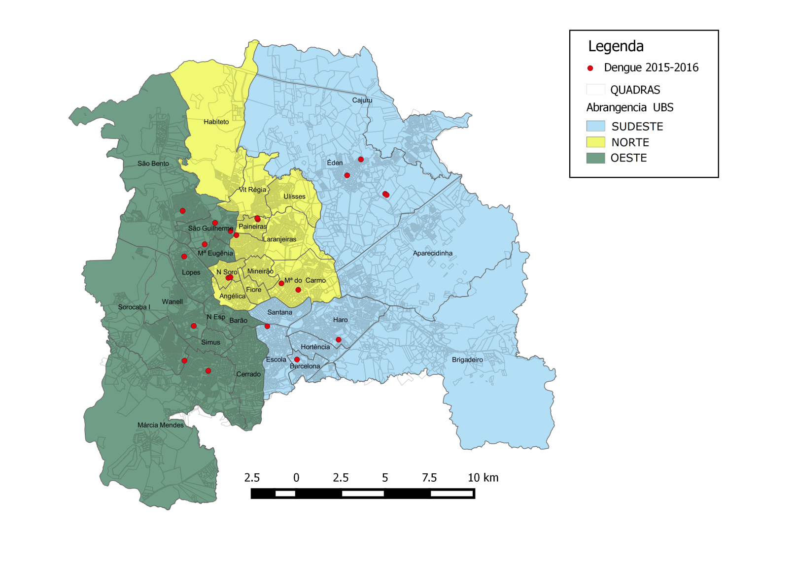
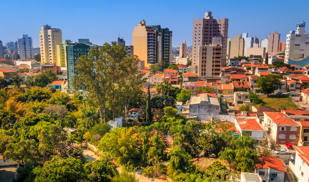

Sorocaba
Sorocaba é um município brasileiro no interior do estado de São Paulo. É a quarta mais populosa do interior paulista e a mais populosa da região sudeste paulista com uma população de 738.128 habitantes, estimada pelo IBGE para 2021, sendo uma capital regional. Possui uma área de 450,38 km².
História da cidade de SorocabaA história de Sorocaba tem início em 1599. Don Francisco de Souza, governador-geral do Brasil (entre 1591 a 1602), ainda acreditando na existência de ouro, esteve na região e levantou o pelourinho " símbolo do poder real na Nova Vila de Nossa Senhora da Ponte de Mont Serrat.
Mapa da cidade de Demografia e Geografia da cidade de Sorocaba
A cidade localiza-se a 87 km de distância da capital do Estado.Se situa às margens de uma importante ferrovia, a Linha Tronco da antiga Estrada de Ferro Sorocabana, que acompanhou todo o seu desenvolvimento. As principais rodovias são a Castelo Branco (SP-280) e Raposo Tavares (SP-270). É atravessada pelo Rio Sorocaba, afluente da margem esquerda do Rio Tietê. O município de Sorocaba situa-se sob o Trópico de Capricórnio, na latitude 23° 26′ 16″. No entroncamento da Rodovia José Ermírio de Morais (SP-75, Castelinho) com a interligação para a Rodovia Raposo Tavares, a Rodovia Dr Celso Charuri (SP-91/270), há um marco sinalizando o Trópico.
A população de Sorocaba estimada pelo IBGE é de 687.357 habitantes sendo uma capital regional.Em relação a 2010, houve um crescimento populacional de cerca de 10%. Em 2010, as mulheres eram maioria, com 51,1% do total. Em números absolutos, eram 299,611 mulheres e 287,014 homens. Havia em 2010, ampla predominância urbana da população em Sorocaba, com menos de 1% da população (5,970 moradores) vivendo na zona rural, contra 580,655 na zona urbana.

Economia da cidade de Sorocaba
o PIB per capita de Sorocaba é de R$ 53,4 mil, valor superior à média do estado (R$ 51,4 mil), da grande região de Sorocaba (R$ 41,6 mil) e da pequena região de Sorocaba (R$ 48 mil).
